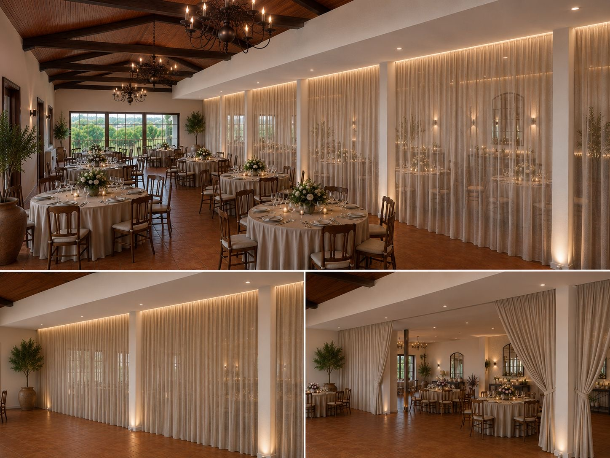
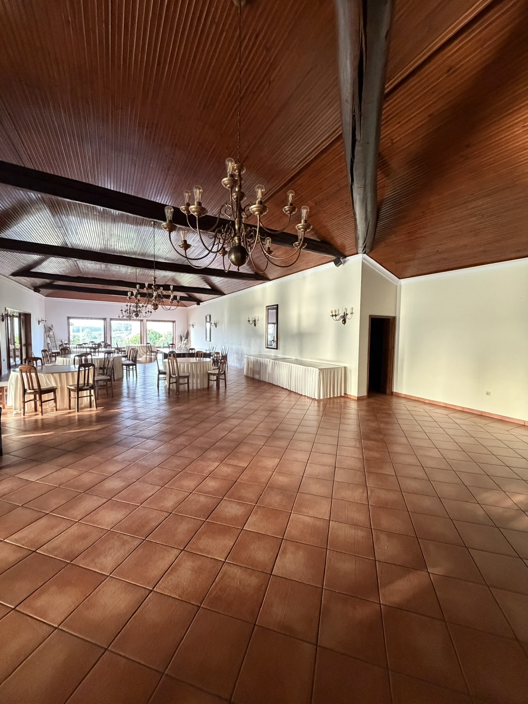
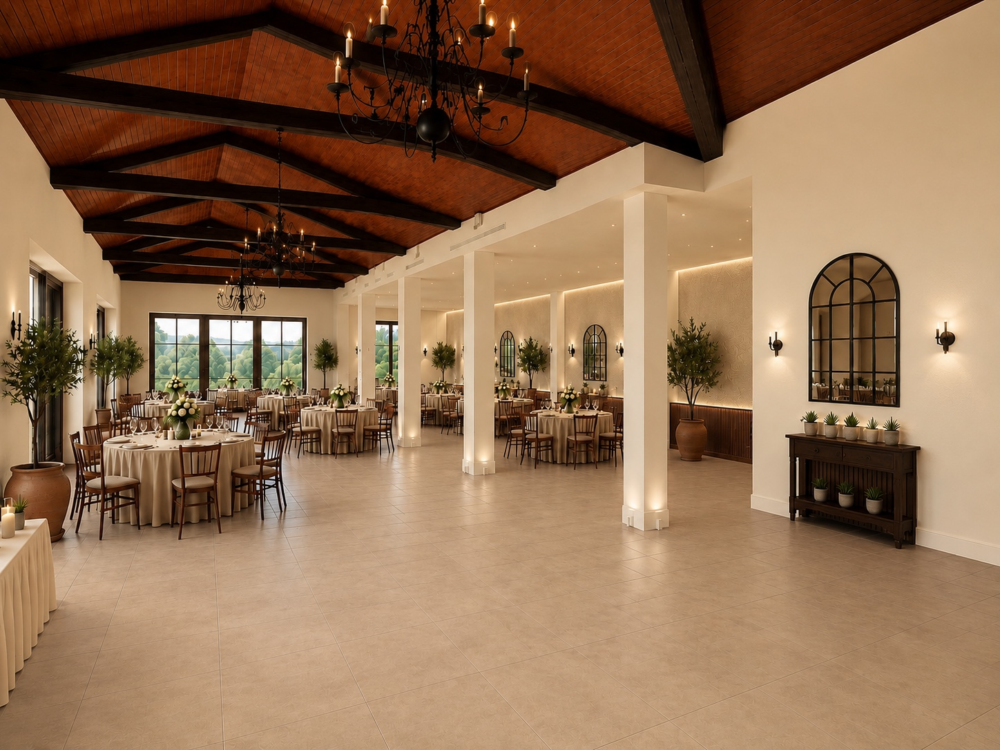
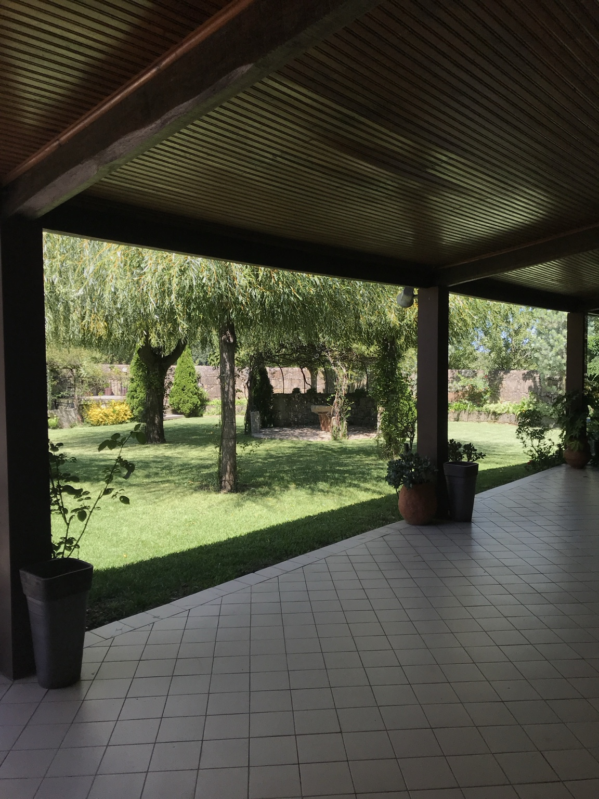
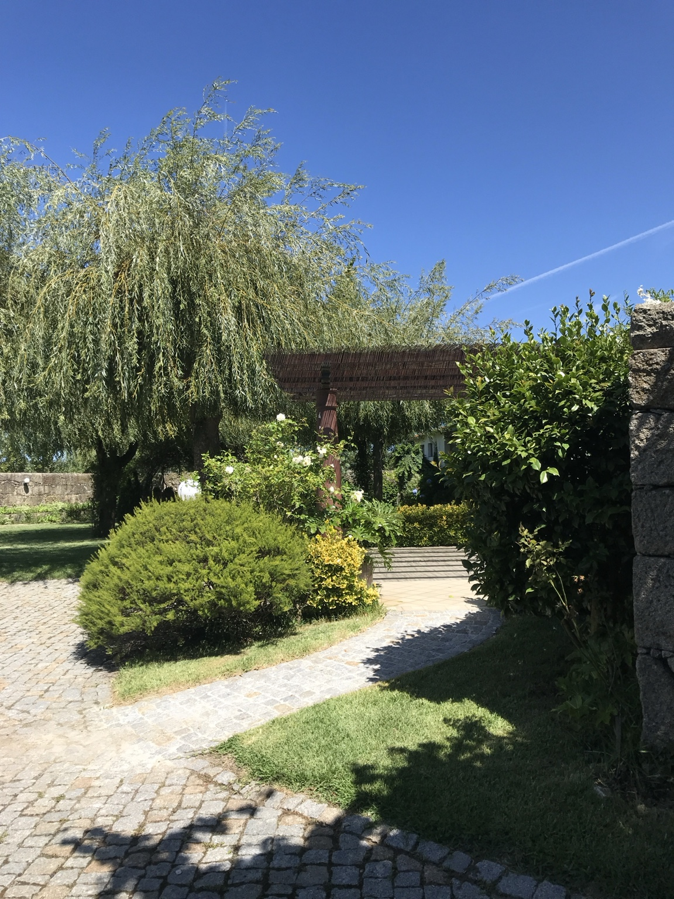

Chegada
Receção dos convidados num ambiente verde, sereno e fácil de encontrar.

Celebrações com alma
Um refúgio elegante em Aveleda, pensado para casamentos, batizados e celebrações inesquecíveis.
Desde 1995
A Quinta Casal Camaz nasceu de um lugar com história e foi sendo cuidada, preservada e modernizada ao longo de várias gerações.
Entre arquitetura rústica, jardins tranquilos e espaços preparados para receber, cada celebração encontra aqui um cenário íntimo, natural e acolhedor. O salão atual recebe até 260 convidados, com um projeto de expansão pensado para elevar a capacidade e o conforto.


Os salões
Madeira, pedra e luz quente criam uma atmosfera confortável e intemporal. Os salões podem adaptar-se a diferentes formatos de evento, desde refeições familiares a grandes celebrações.


Os jardins
Os espaços exteriores acompanham o ritmo do dia: receção ao ar livre, fotografias entre o verde, momentos de pausa e um cenário envolvente quando as luzes se acendem ao final da tarde.
Um ambiente sossegado e acolhedor, com a tranquilidade característica do meio rural.
Mais do que um espaço
Receção dos convidados num ambiente verde, sereno e fácil de encontrar.
Salões flexíveis, atmosfera intimista e ligação natural ao exterior.
Recantos, jardins e fachadas com personalidade para fotografias únicas.
Galeria
Como chegar
A Quinta Casal Camaz situa-se em Aveleda, Vila do Conde, a meia distância entre o Porto e Vila do Conde. O acesso é simples pela A28, com o Aeroporto Francisco Sá Carneiro e a estação de Metro de Vilar do Pinheiro nas proximidades.
Vamos conversar?
Conte-nos a data, o tipo de evento e o número aproximado de convidados. Entraremos em contacto para preparar uma visita ao espaço.